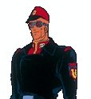
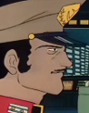
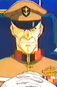
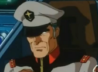
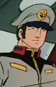

Earth Federation Fleets Earth Federation Fleets
The Luna II Defense Fleet Currently stationed inside the asteroid for use as a trump card in case of emergency, the Luna II Defense Fleet is a monstrous affair, led by Wakkeins trusted Lieutenant Reed. It is one of the largest fleets in the solar system even after the Federations terrible defeats the early months of the war, and is now equipped with modern tactics and mobile suits. The fleets ace pilot Yazan Gable is a fierce fighter, a man who loves combat and will do anything he can to fight anybody both inside and outside the cockpit.  The Barrier Fleet Commanders: Blex, Bosque Ohm, Tianem, Henken and Wyatt The front line of defense in the EFs hold in space, these fleets have been through a lot, and only recently emerged to control some portion of the Earth Sphere once again. Blex and Tianem are known to be good, honest men, Blex an excellent judge of character who lets his men do what they will, and Tianem the overall commander of the barrier fleets and a spectacular tactician. Tianems second Henken is known to be very soft with his crew, and a bit of a ladies man, always trying to impress the girls on his bridge crew. "Green" Wyatt is a stern and serious commander, with an impressive track record, his green Magellan having sunk several ships at the Battle of Lourm. Finally, Bosque Ohm is something of a brooder, an angry man who fights dirty and spends more of his time talking to Jamitov than anyone else in the EF brass.  The EFSF Resupply Fleet This fleet is tasked with ferrying cargo between the two day from Earth battle lines and Luna II, as well as repairing front line ships in the field. It contains a large flotilla of support ships, but in addition is complimented by a reasonable defense force, headed by commander Synapse. Synapse is a brilliant tactician, but has an issue with disobeying authority and mouthing off to superiors when he thinks they are going about things the wrong way. As such, his Magellan has been reassigned to this post, and although he will do his duty, he feels he could better serve the Federation elsewhere.  The EFGF Resupply Fleet Commanders: Matilda and Woody Currently engaged to each other, Medea commanders Woody and Matilda are tasked with delivering cargo to Federation held areas and forces that the naval convoys cannot reach. Both very similar, optimistic and brave captains, they have led their Medeas to difficult supply paradrops deep in Zeon territory, and are a continuing assistance to the war effort, greatly appreciated by General Revil and his staff. |